第5讲 · 一元函数微分学的应用（一）——几何应用
据《张宇考研数学基础30讲·高等数学分册（2026版）》整理 · 覆盖原书 P186–P210
本讲导读
这一讲只干一件事：不算具体数值，凭 \(f'\)、\(f''\) 的符号读出函数长什么样——哪里升哪里降、哪里是峰谷、哪里拐弯、跑向无穷时贴着哪条直线。张宇在扉页手写的话就是"画出 \(f(x)\) 大致的图像"，需要考虑定义域、奇偶性、周期性，加上极值点、拐点、渐近线、最值。考研考法（印P186 考题栏）：极值点与单调性、拐点与凹凸性、最值等函数性态的分析，加上渐近线求法，选择、填空、解答题都出；重难点就两条——极值点的判别、拐点的判别。位置上它上承第4讲（求导计算），是"微分学应用"的第一讲（第6讲是中值定理、不等式与零点问题），强化教材里这些方法会串成专题，这里底子必须打牢。学法建议：每个判定定理按"条件—结论—反例"三件套过一遍，渐近线照流程图走，例题里的套路自己动手推。
站注·真题大数据：本讲属第一梯队——"导数计算与几何应用（单调/极值/凹凸）"在新东方近 15 年真题统计里几乎每年必考，与本讲直接对应的题型就是单调性极值凹凸渐近线与函数作图；"方程根的个数讨论"与第 6 讲联动，也常用本讲的单调性工具打底（详见「考点与方法补充」）。
知识框架
- 单调性与极值
- 极值的定义（局部概念，左右邻域内均有定义；间断点可以是极值点）
- 单调性的判别（\(f'\) 定号，等号仅有限个点仍严格单调）
- 必要条件：费马定理（可导极值点必是驻点）
- 判别极值的第一、第二、第三充分条件
- 凹凸性与拐点
- 凹凸两个定义：中点弦式（大纲定义）、切线式（含广义 \(\lambda\) 版本）
- 拐点的定义（连续曲线凹弧与凸弧的分界点，写 \((x_0, f(x_0))\)）
- 判别凹凸（\(f''\) 定号）；拐点的必要条件与第一、第二、第三充分条件
- 极值点与拐点的重要结论（可导点不可兼得、\((x-a)^n g(x)\) 判别法、个数公式）——常命制选择题
- 渐近线
- 铅直渐近线（三类点）、水平渐近线（两个方向）、斜渐近线（\(a,b\) 都要存在）
- 求解程序流程图与讨论顺序
- 最值或取值范围
- 最值的定义与极值—最值关系（含内部最值点必是极值点）
- 闭区间上连续函数的最值（三步法）
- 开区间上的最值或取值范围（端点换单侧极限）、实际问题最值
- 作函数图像（四步）
- 直角坐标方程、极坐标方程（\(r=\sin^2\theta\)）、参数方程（\(\{\begin{smallmatrix}x=\sin t\\ y=\cos^3 t\end{smallmatrix}\) 化 \(y^2=(1-x^2)^3\)）三种给法
- 曲率与曲率半径（仅数学一、数学二）
- 公式与几何意义；参数方程先求 \(\dfrac{dy}{dx},\dfrac{d^2y}{dx^2}\) 再代入
核心概念与定理
极值的定义
存在 \(x_0\) 的某个邻域，对邻域内任意 \(x\) 都有 \(f(x) \le f(x_0)\)（或 \(f(x) \ge f(x_0)\)），则 \(x_0\) 是极大（小）值点，\(f(x_0)\) 是极大（小）值。四条笔记（印P187 注1）：极值是局部概念；点左右邻域都得有定义，端点与间断点外侧不讨论；常函数处处取极大也处处取极小；考研常考查"间断点可以是极值点"这种反直觉情形，判别极值点最原始的依据永远是定义——看 \(x_0\) 处有定义且函数值不小于（不大于）邻近点的函数值。
间断点可以是极值点（四类各一例）
印P188 的注专门回答"间断点可以是极值点吗"——答案是肯定的，四个例子值得抄一遍：可去间断点 \(x=0\) 是极大值点（\(f(0)=1\)，其余 \(F(x)=|x|\)，手写批注点破本质：在 0 处有定义、函数值比两边大，符合定义，与连续无关）；跳跃间断点 \(x=0\) 是极小值点（\(f(x)=\begin{cases}x+2, & x>0\\ x, & x\le0\end{cases}\)，\(f(0)=0\) 小于右侧函数值）；无穷间断点 \(x=0\) 是极小值点（\(f(x)=-1+\dfrac1{x^2}\)，\(f(0)=-1\)，两侧全大于 \(-1\)）；振荡间断点 \(x=0\) 是极大值点（\(f(x)=2+\sin\dfrac1x\)，\(f(0)=2\)，两侧全部小于 2）。判别手法都是一条：极值的定义只比较函数值大小，与连不连续、可不可导无关。
单调性的判别
设 \(y=f(x)\) 在 \([a,b]\) 上连续、在 \((a,b)\) 内可导：若 \(f'(x) \ge 0\) 且等号仅在有限个点处成立，则 \(f\) 在 \([a,b]\) 上严格单调增加；\(f'(x) \le 0\) 同理严格单调减少（印P188）。方向别背反：导数大于 0 一定严格增，但严格增不一定导数处处大于 0，\(y=x^3\) 在 \(x=0\) 处 \(f'(0)=0\) 照样严格增。这条是一元微分几何应用的引擎——后面极值、拐点、方程根个数（第6讲）、不等式证明全靠它。
极值的必要条件（费马定理）
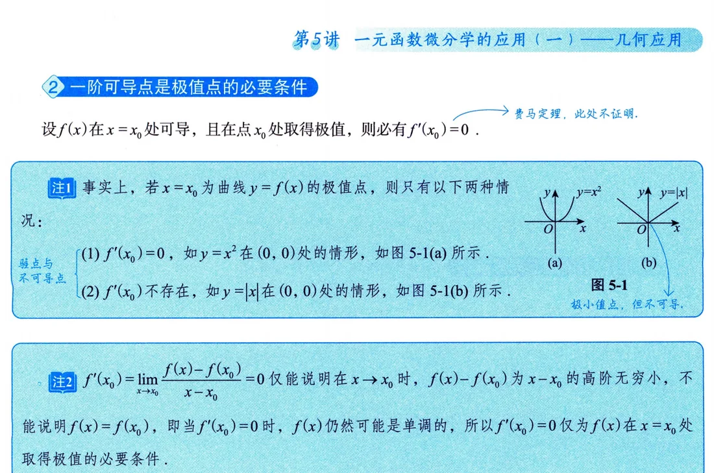
\(f\) 在 \(x_0\) 处可导且取极值 \(\Rightarrow f'(x_0)=0\)。所以找极值只查两种点：驻点（\(f'(x_0)=0\)，原型 \(y=x^2\) 在 \((0,0)\)）和不可导点（原型 \(y=|x|\) 在 \((0,0)\)，尖点）——\(x_0\) 若不是这两类点之一，就不可能是极值点。注意 \(f'(x_0)=0\) 仅仅是必要条件，它成立时 \(f\) 在 \(x_0\) 仍可能单调（如 \(y=x^3\) 在原点，印P189 注2）。
定理5.2 极值第一充分条件
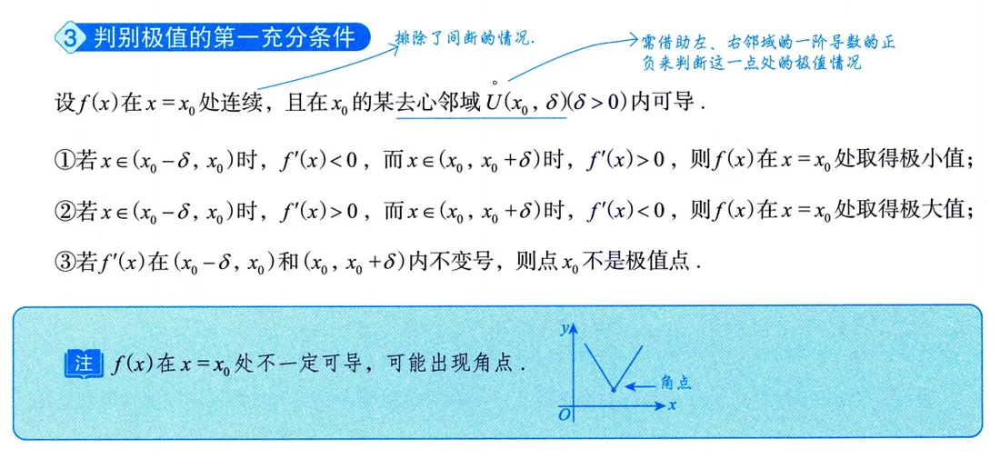
\(f\) 在 \(x_0\) 处连续、在去心邻域内可导，看 \(f'\) 左右变号——左负右正得极小，左正右负得极大，不变号就不是极值点。前提"\(x_0\) 处连续"别忘了，它排除了间断的情形；\(f\) 在 \(x_0\) 处本身可以不可导（尖点照样判，如 \(y=|x|\) 在原点：左负右正，极小）。这是适用面最宽的一把刀，\(f''\) 不好算、\(x_0\) 不可导时都得靠它。
定理5.2 极值第二充分条件
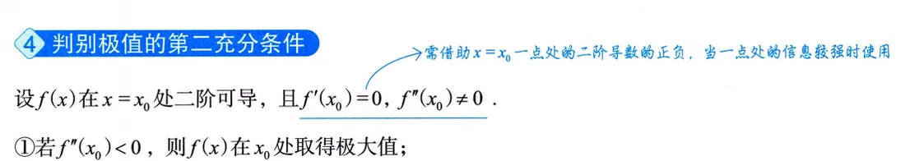
\(f'(x_0)=0\) 且 \(f''(x_0)\ne0\) 时，\(f''(x_0)<0\) 取极大、\(f''(x_0)>0\) 取极小。书上证明用极限保号性：由 \(\lim\limits_{x\to x_0}\dfrac{f'(x)-f'(x_0)}{x-x_0}=f''(x_0)<0\)，左邻域 \(f'<0\)、右邻域 \(f'>0\)，化归成第一充分条件。二阶导好算时它最快；\(f''(x_0)=0\) 时它失效，退回第一充分条件或改用第三充分条件。
定理5.2 极值第三充分条件
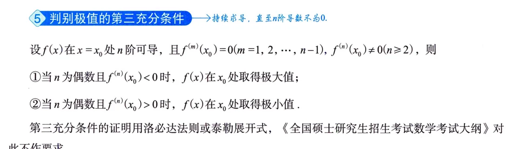
前 \(n-1\) 阶导数在 \(x_0\) 全为零、\(n\) 阶导不为零（\(n\ge2\)）时，\(n\) 为偶数才有极值——\(f^{(n)}(x_0)<0\) 极大、\(>0\) 极小。证明用洛必达或泰勒，大纲不作要求（印P190 注），会套就行。记忆抓手：第一个不为零的导数是偶数阶管极值、奇数阶管拐点，两套条件正好对称。
凹凸性的定义
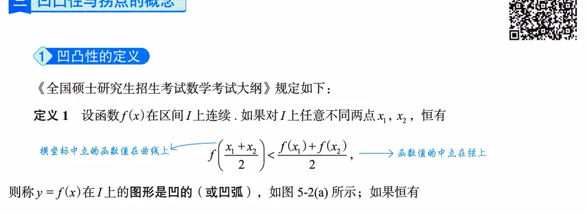
两个等价定义（印P192-193）。中点式（定义1，大纲规定）：\(f\left(\dfrac{x_1+x_2}{2}\right) < \dfrac{f(x_1)+f(x_2)}{2}\) 对 \([a,b]\) 内任意两点恒成立称凹（凹弧，弧段在弦下方，\(\cup\) 形，图5-2(a)）；反向不等式称凸。切线式（定义2）：\(f\) 在 \([a,b]\) 连续、\((a,b)\) 可导，若 \(f(x_0)+f'(x_0)(x-x_0) < f(x)\) 对任意 \(x, x_0\) 恒成立称凹——曲线总在任一切线上方，图5-3(a)。广义版本 \(f(\lambda_1 x_1+\lambda_2 x_2) < \lambda_1 f(x_1)+\lambda_2 f(x_2)\)（\(\lambda_1,\lambda_2>0\)，\(\lambda_1+\lambda_2=1\)，印P193 注）是中点式的推广，\(\lambda_1=\lambda_2=\dfrac12\) 只是特殊情形。
拐点的定义
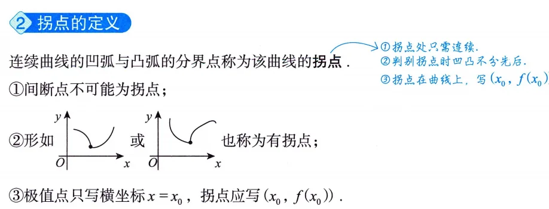
连续曲线 \(y=f(x)\) 上凹弧与凸弧的分界点称为曲线的拐点。三条（印P193）：间断点不可能是拐点（拐点处只要求连续）；端点处单侧凹凸相接也可称有拐点；写法上极值点只写横坐标 \(x=x_0\)，拐点必须写全 \((x_0, f(x_0))\)。
定理5.3 凹凸性与拐点的判别
凹凸判别：\(f\) 在 \(I\) 上二阶可导，\(f''>0\) 则图形是凹的，\(f''<0\) 则是凸的（印P193-194）。
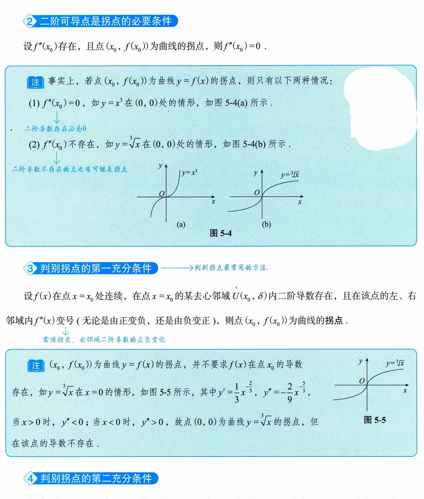
拐点判别和极值完全平行：必要条件是 \(f''(x_0)=0\)（若 \(f''(x_0)\) 存在），嫌疑点 = \(f''\) 的零点 ∪ \(f''\) 不存在的点——\(y=\sqrt[3]{x}\) 在 \((0,0)\) 处 \(y''\) 不存在却是拐点（图5-4(b)），是标准反例；\(y=x^4\) 在原点 \(y''=0\) 但不是拐点（图5-5a 型）。第一充分条件（最常用）：\(f\) 在 \(x_0\) 处连续、去心邻域内二阶可导，\(f''\) 在两侧变号（正变负、负变正都行）则 \((x_0,f(x_0))\) 是拐点。第二充分条件：\(f''(x_0)=0\) 且 \(f'''(x_0)\ne0\) 则是拐点（\(f'''(x_0)>0\) 时曲线在 \(x_0\) 左侧邻近凸、右侧邻近凹，证明同样走保号性，印P194-195）。第三充分条件：\(f^{(m)}(x_0)=0\)（\(m=2,\dots,n-1\)）、\(f^{(n)}(x_0)\ne0\)（\(n\ge3\)）且 \(n\) 为奇数时 \((x_0,f(x_0))\) 是拐点，而且不需要 \(f'(x_0)=0\)（印P195 注2——对 \(m=1\) 无须要求，因为拐点只看凹凸不看升降）。
定理5.4 极值点与拐点的重要结论
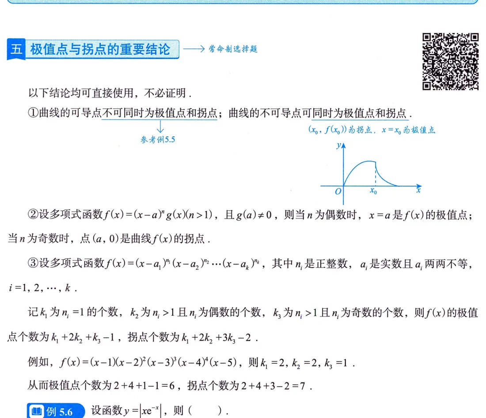
选择题专供，均可直接使用。① 曲线的可导点不可同时为极值点和拐点；不可导点可以同时。② \(f(x)=(x-a)^n g(x)\)（\(n>1\)，\(g\) 在 \(a\) 的邻域内连续且 \(g(a)\ne0\)）：\(n\) 为偶数时 \(x=a\) 是极值点（\(g(a)>0\) 极小、\(<0\) 极大），\(n\) 为奇数时 \((a,0)\) 是拐点。③ 把 \(f\) 分解为 \(\prod_i (x-a_i)^{n_i}\)，记 \(k_1\) 为 \(n_i=1\) 的个数、\(k_2\) 为 \(n_i>1\) 且偶的个数、\(k_3\) 为 \(n_i>1\) 且奇的个数，则极值点个数 \(=k_1+2k_2+k_3-1\)，拐点个数 \(=k_1+2k_2+3k_3-2\)。原书例子 \(f(x)=(x-1)(x-2)^2(x-3)^3(x-4)^4(x-5)\)：\(k_1=2,k_2=2,k_3=1\)，极值点 \(2+4+1-1=6\) 个，拐点 \(2+4+3-2=7\) 个。原理记一句（手写批注，印P197）：\(m\) 重因式是导数的 \(m-1\) 重因式——三重根是 \(f''=0\) 的单根，故 \(f''\) 过它变号。
定理5.5 铅直渐近线与水平渐近线
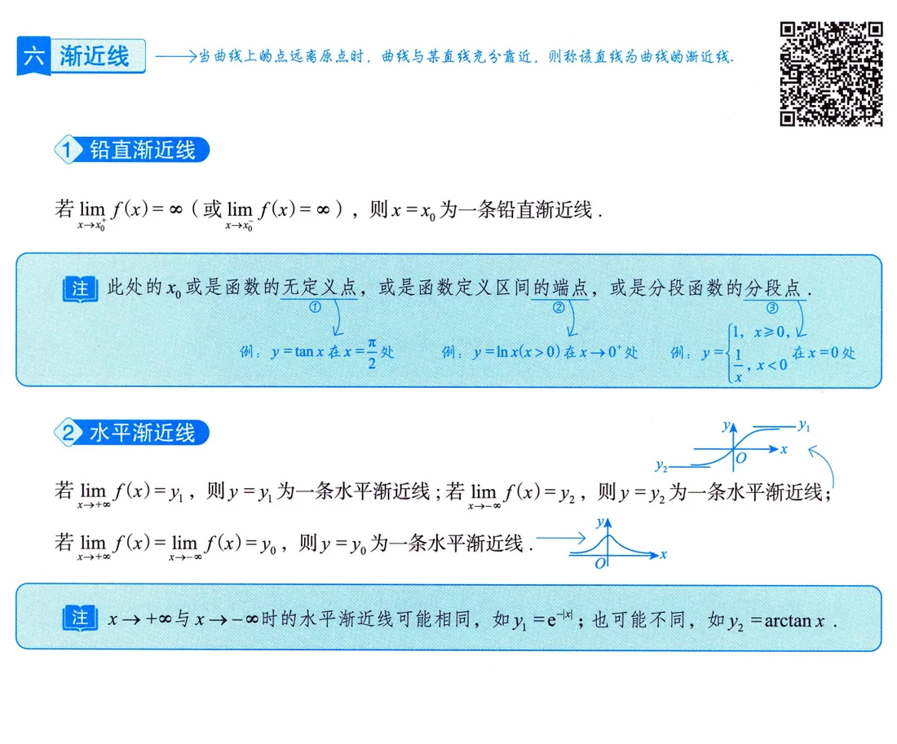
铅直渐近线找三类点：无定义点、定义区间端点、分段函数的分段点，单侧极限为 \(\infty\) 即得（如 \(y=\tan x\) 在 \(x=\dfrac{\pi}{2}\)、\(y=\ln x\) 在 \(x\to0^+\)、分段函数在分段点两侧异号无穷，印P198）。水平渐近线 \(x\to+\infty\) 与 \(x\to-\infty\) 各看各的：可以一条（\(y=\mathrm{e}^{-|x|}\)），也可以两条不同（\(y=\arctan x\) 的 \(y=\pm\dfrac{\pi}{2}\)，印P199 注）。
定理5.5 斜渐近线
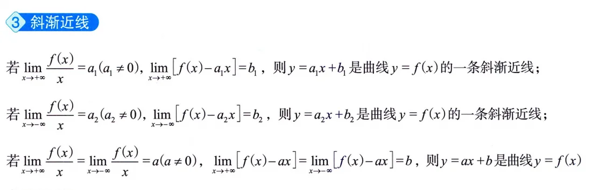
斜渐近线 \(y=ax+b\)：\(a=\lim\limits_{x\to\infty}\dfrac{f(x)}{x}\)（须为非零常数），\(b=\lim\limits_{x\to\infty}[f(x)-ax]\)，\(x\to+\infty\) 与 \(x\to-\infty\) 分开算（印P199 注2：两个方向的斜渐近线可以不同）。两个极限都求出来且都存在才算数——\(y=x+\sin x\) 有 \(a=1\) 但 \(b=\lim\sin x\) 不存在，于是没有斜渐近线（印P200 注4①）。
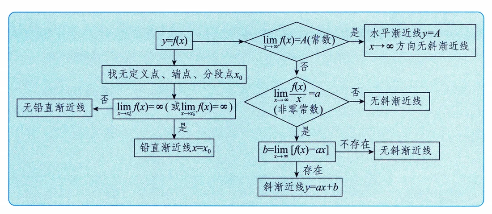
做题顺序固定（印P199 注3 的详细程序）：先铅直（找三类点），再水平，最后斜；一旦某方向有水平渐近线，该方向就无斜渐近线。另外曲线与渐近线可以有交点（\(y=\dfrac{\sin x}{x}\) 与 \(y=0\) 无穷多次相交，图5-6 前的图），"渐近"不等于"永不相接"（印P200 注4②）。
定理5.6 最值的定义与极值—最值关系
定义3（印P201）：\(x_0\) 为 \(f\) 定义域内一点，若对定义域内任意 \(x\) 均有 \(f(x)\le f(x_0)\)（或 \(\ge\)），则 \(f(x_0)\) 是最大（小）值——注意最值是整体概念，对全定义域而言。极值与最值的关系看两个例子（印P201-202 注）：\(e^x\) 在 \([0,+\infty)\) 有最小值 \(f(0)=1\) 却无极值（端点无双侧邻域，内部任意点邻域里都有比它小的值）；\(3x-x^3\) 有极大值 \(f(1)=2\)、极小值 \(f(-1)=-2\) 却在整个 \((-\infty,+\infty)\) 上无最值。结论：极值点不一定是最值点，最值点也不一定是极值点（端点处取的最值就不是），但内部最值点必是极值点——若 \(x_0\) 是 \(I\) 内部的最值点，则存在邻域 \(U(x_0)\subset I\)，\(f(x)\le f(x_0)\) 对邻域内一切 \(x\) 成立，按定义 \(f(x_0)\) 就是极大（小）值（印P202，配三次函数示意图）。
定理5.7 闭区间与开区间上求最值的方法
闭区间 \([a,b]\) 上连续函数求最值三步（印P202）：① 求出 \((a,b)\) 内的可疑点（驻点与不可导点）的函数值；② 求端点值 \(f(a), f(b)\)；③ 比较所有函数值，最大者为 \(M\)、最小者为 \(m\)。问法也可以变成"求值域 \([m,M]\)"（印P202 注）。开区间 \((a,b)\)：把端点值换成两端单侧极限 \(A=\lim\limits_{x\to a^+}f(x)\)、\(B=\lim\limits_{x\to b^-}f(x)\) 再比较，可能没有最值，问法变成"取值范围"（印P202）。实际问题最值（印P203 注2）：先建立目标函数并确定定义区间，若实际问题确有最值且目标函数有唯一极值点，则该极值点就是所求最值点。
作函数图像（四步）
四步（印P203）：① 确定定义域，考查奇偶性、周期性，用好图像变换（对称性常可只画第一象限）；② 导数工具——一阶导定单调区间与极值点，二阶导定凹凸区间与拐点；③ 考查渐近线；④ 作图（列表整理最不容易乱）。直接考作图的少，但每一步都是考点，要会分析函数性态。极坐标曲线也一样处理（例5.14 的 \(r=\sin^2\theta\)：视 \(\theta\) 为横轴、\(r\) 为纵轴先画 \(\dfrac{1-\cos2\theta}{2}\) 的直角坐标图，再回极坐标描点）；参数方程给曲线时（印P204 注）可用描点法，或化为直角/极坐标方程后借助函数性态画图，如 \(\begin{cases}x=\sin t\\ y=\cos^3t\end{cases}\) 化为 \(y^2=(1-x^2)^3\)。常用曲线（心形线、星形线、平摆线）见附录2，要能手画。
曲率与曲率半径（仅数学一、二）
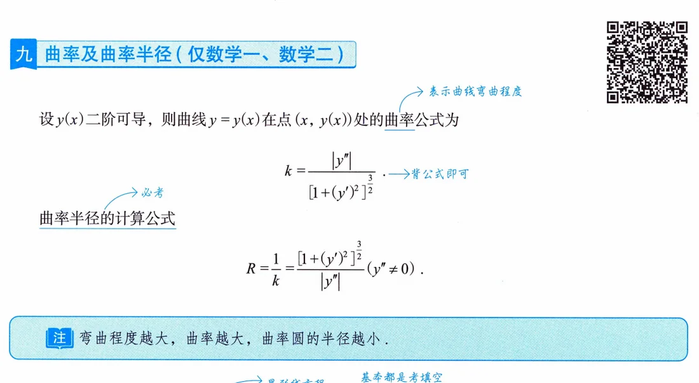
\[ k=\frac{|y''|}{[1+(y')^2]^{3/2}}, \qquad R=\frac{1}{k}=\frac{[1+(y')^2]^{3/2}}{|y''|}\quad (y''\ne0). \]
曲率刻画曲线的弯曲程度，\(k\) 越大弯得越厉害；曲率与曲率圆半径互为倒数，弯曲程度越大曲率圆半径越小（印P206 注，曲率半径计算必考）。曲线由参数方程给出时，先用参数求导算出 \(\dfrac{dy}{dx}\)、\(\dfrac{d^2y}{dx^2}\) 再代公式（例5.15：星形线 \(x=\cos^3t,\ y=\sin^3t\) 在 \(t=\frac{\pi}{4}\) 处 \(k=\frac23\)）。直线 \(y''=0\) 曲率为 0、半径无穷大，圆的曲率处处等于半径的倒数——公式代这两个特例可自检。
典型例题精讲
例5.1 见 \(f f'\) 凑平方的导数
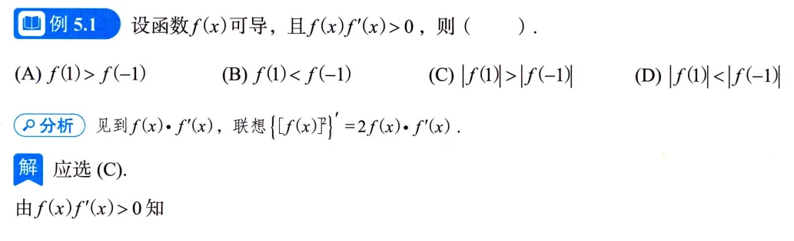
思路 见到 \(f(x)\cdot f'(x)\)，联想 \(\left[f^2(x)\right]'=2f(x)f'(x)\)，把条件凑成某个函数的导数看符号。 要点 设 \(f(x)\) 在 \((-1,1)\) 内可导且 \(f(x)f'(x)>0\)，比较 \(f(1)\) 与 \(f(-1)\) 的大小：由 \(f(x)f'(x)>0\) 得 \(\left[\dfrac12 f^2(x)\right]'=f(x)f'(x)>0\)，所以 \(\dfrac12 f^2(x)\) 单调增加，从而 \(f^2(1)>f^2(-1)\)，两端开方得 \(|f(1)|>|f(-1)|\)，选 (C) 并排除 (D)。再举例：取 \(f(x)=-e^x\) 满足条件，有 \(f(1)<f(-1)\)；取 \(f(x)=e^x\) 有 \(f(1)>f(-1)\)，排除 (A)(B)。 注 开方必须带绝对值，\(\sqrt{u^2}=|u|\) 而非 \(u\)；举例在选择题里只能排除选项，不能当证明（印P191 注）。
例5.2 极大值能推出 \(f''(x_0)\) 的什么
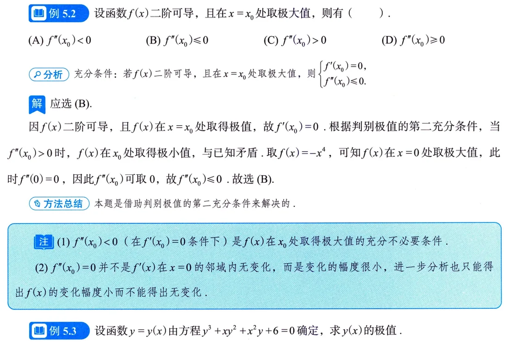
思路 "二阶可导 + 取极大值"先给 \(f'(x_0)=0\)，再用第二充分条件反向排除严格不等号。 要点 设 \(f''(x_0)\) 存在且 \(f(x_0)\) 是极大值，问 \(f''(x_0)\) 的符号：因 \(f\) 二阶可导故可导，且在 \(x_0\) 取极值，由费马定理 \(f'(x_0)=0\)；若 \(f''(x_0)>0\)，由第二充分条件 \(f\) 在 \(x_0\) 应取极小值，与题设矛盾，故 \(f''(x_0)\le0\)，选 (B)。等号取得到：\(f(x)=-x^4\) 在 \(x=0\) 取极大值，但 \(f''(0)=0\)。 注 在 \(f'(x_0)=0\) 的条件下，\(f''(x_0)<0\) 是取极大值的充分不必要条件（印P191 注）。
例5.3 隐函数的极值：借用第4讲的结果
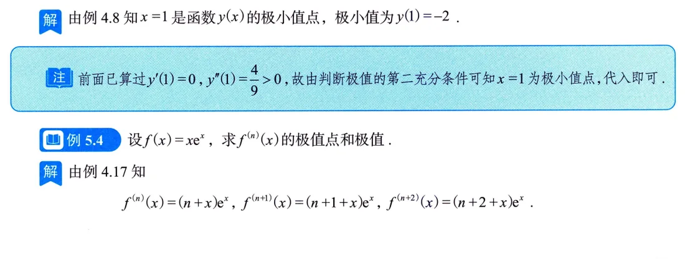
思路 隐函数极值仍是"找驻点 + 二阶导判别"，只是求导用隐函数求导法，第4讲例4.8 已把 \(y'\)、\(y''\) 都算好了，直接接上。 要点 设 \(y=y(x)\) 由方程 \(y^3+xy^2+x^2y+6=0\) 确定，求 \(y(x)\) 的极值：由例4.8 已得 \(y'\big|_{x=1}=0\)、\(y''\big|_{x=1}=\dfrac49>0\)，所以 \(x=1\) 是 \(y=y(x)\) 的极小值点，极小值 \(y(1)=-2\)。 注 隐函数极值题的关键动作：方程两边求导后令 \(y'=0\)，把 \(y=x\)（或类似关系）代回原方程解出驻点；判别时代入的是 \(y''\) 在该点的值，而不是 \(f''(x)\) 的表达式符号。这类题第4讲与第5讲共用一套计算。
例5.4 给 \(f\) 求 \(f^{(n)}\) 的极值
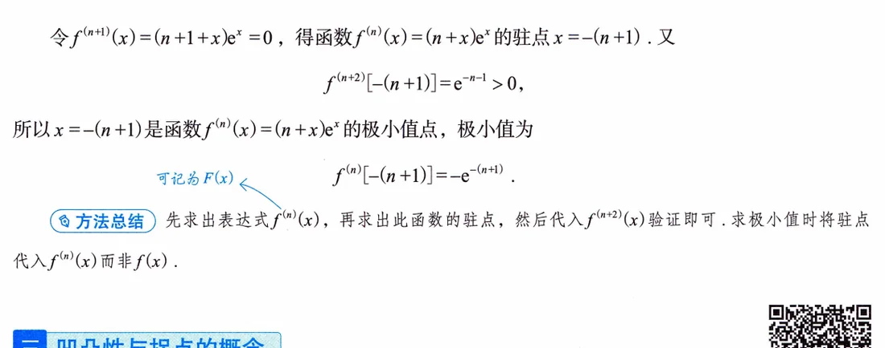
思路 先写出 \(f(x)=(x+n)e^x\) 型函数的 \(f^{(n)}(x)=(n+x)e^x\)（例4.17 的结论），把 \(f^{(n)}\) 当成一个新函数求极值。 要点 求 \(f(x)=(x+n)e^x\)（\(n\) 为正整数）的 \(f^{(n)}(x)\) 的极值：\(f^{(n)}(x)=(n+x)e^x\)，\(f^{(n+1)}(x)=(n+1+x)e^x\)，令其为零得驻点 \(x=-(n+1)\)；代入 \(f^{(n+2)}(x)=(n+2+x)e^x\) 得 \(f^{(n+2)}\big(-(n+1)\big)=e^{-(n+1)}>0\)，由第二充分条件，\(x=-(n+1)\) 是 \(f^{(n)}\) 的极小值点，极小值 \(f^{(n)}\big(-(n+1)\big)=-e^{-(n+1)}\)。 注 方法总结（印P192）：先求 \(f^{(n)}\) 表达式，再求它的驻点，代 \(f^{(n+2)}\) 验证；求极值时函数值要代入 \(f^{(n)}\) 本身，不是代入 \(f\)。
例5.5 从微分方程里榨出拐点信息
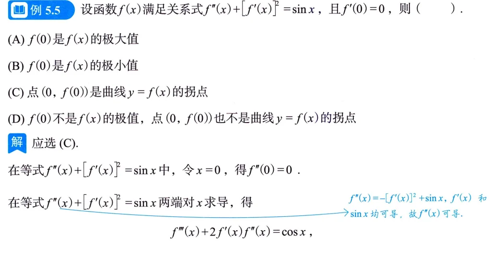
思路 不解方程，只在 \(x=0\) 处反复提取信息：先代值，再两边求导后代值。 要点 设 \(y=f(x)\) 二阶可导，\(f(0)=f'(0)=0\) 且 \(f''(x)+[f'(x)]^2=\sin x\)，判别 \((0,f(0))\) 是什么点：原式中令 \(x=0\)，得 \(f''(0)=0\)；两边对 \(x\) 求导得 \(f'''(x)+2f'(x)f''(x)=\cos x\)，令 \(x=0\) 得 \(f'''(0)=1\ne0\)。由拐点的第二充分条件，\((0, f(0))\) 是曲线的拐点，选 (C)。(A)(B) 为何错：\(f'(0)=0\) 说明 \(x=0\) 是驻点，而"重要结论①"说可导点不可同时为极值点和拐点，故 \(f(0)\) 不是极值。 注 敢对 \(f''\) 再求导的依据：对等式而言，若等号一侧可导，另一侧必然可导（印P196 注）。方法总结：无须解微分方程，只需取得 \(x=0\) 处的有效信息。
例5.6 绝对值函数的极值与拐点
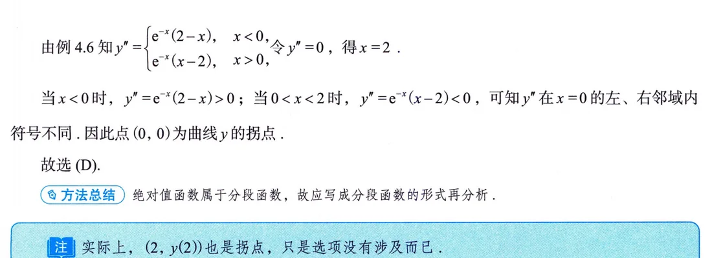
思路 绝对值函数先拆成分段函数；\(x=0\) 处不可导，极值用定义看（左右邻域函数值大小），拐点看 \(f''\) 变号。 要点 曲线 \(y=|x|e^{-x}\)（\(-\infty<x<+\infty\)）上点 \((0,0)\) 是极小值点还是拐点：\(y\big|_{x=0}=0\)，而 \(x\ne0\) 时 \(y=|x|e^{-x}>0\)，由定义 \(x=0\) 是极小值点。由例4.6，\(y''=e^{-x}(2-x)\ (x<0)\)，\(y''=e^{-x}(x-2)\ (x>0)\)：\(x<0\) 时 \(y''>0\)，\(0<x<2\) 时 \(y''<0\)，即 \(y''\) 在 \(x=0\) 的左、右邻域内符号不同，故 \((0,0)\) 是曲线的拐点。选 (D)（既是极小值点又是拐点——不可导点可以同时是两者）。 注 实际上 \((2, y(2))\) 也是拐点，只是选项没有涉及（印P197 注）。
例5.7 找 \((x-a)^n\) 型曲线的拐点
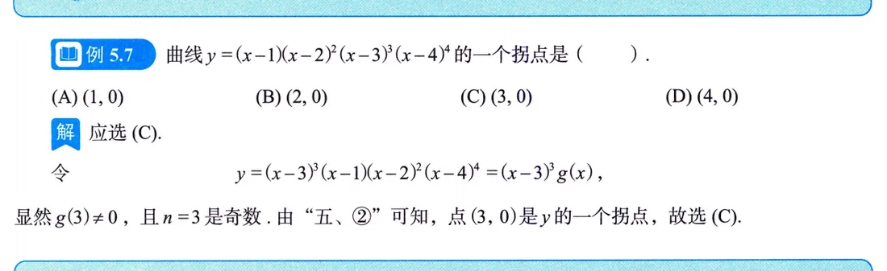
思路 套"重要结论②"：把 \(x=3\) 的因子凑成三次幂。 要点 曲线 \(y=(x-1)(x-2)^2(x-3)^3(x-4)^4\) 的拐点有几个？其中 \((3,0)\) 是不是拐点：\(y=(x-3)^3\cdot\underbrace{(x-1)(x-2)^2(x-4)^4}_{g(x)}\)，\(g(3)\ne0\)，\(n=3>1\) 为奇数，由结论②知 \((3,0)\) 是曲线的一个拐点，选 (C)。 注 结论②要求 \(n>1\)，所以只分析 \((3,0)\) 而不分析 \((1,0)\)（印P197 注1，\((x-1)\) 是一次因式不适用）。再由结论③，此曲线 \(k_1=1, k_2=2, k_3=1\)，拐点共 \(1+2\times2+3\times1-2=6\) 个。
例5.8 数拐点个数
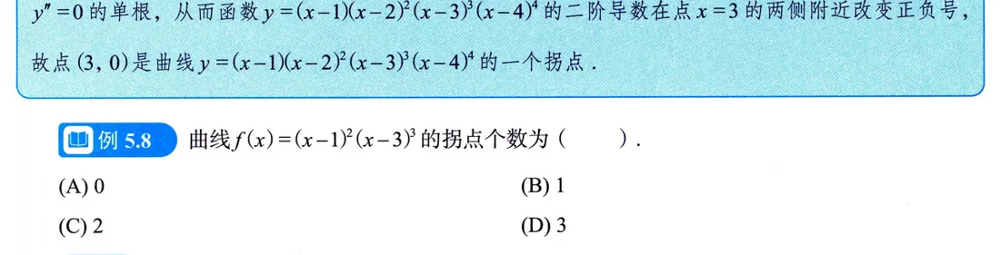
思路 直接用个数公式，只需数清各因式的重数。 要点 曲线 \(y=(x-1)^2(x-3)^3\) 的拐点个数为多少：无一次因式，\(k_1=0\)；\(n=2\)（偶）一个，\(k_2=1\)；\(n=3\)（奇）一个，\(k_3=1\)。拐点个数 \(=k_1+2k_2+3k_3-2=0+2+3-2=3\)，选 (D)。 注 常规解法（印P197-198 注）：由 \(f'(x)=(x-1)(x-3)^2(5x-9)\) 及 \(f'(1)=f'(\tfrac95)=f'(3)=0\)，知 \(f''(x)\) 必含一次因式 \(x-3\)，且存在 \(x_1\in\left(1,\tfrac95\right)\)、\(x_2\in\left(\tfrac95,3\right)\) 使 \(f''(x)=k(x-x_1)(x-x_2)(x-3)\)，\(f''\) 在三点两侧都变号，同样得 3 个拐点，但计算量大得多。同页注(2)还有一道即时练习：\(y=(x-1)^2(x-3)^2\) 的极值点 3 个、拐点 2 个（\(k_1=0,k_2=2,k_3=0\)：极值 \(0+4+0-1=3\)，拐点 \(0+4+0-2=2\)），自己代一遍公式。
例5.9 渐近线全套
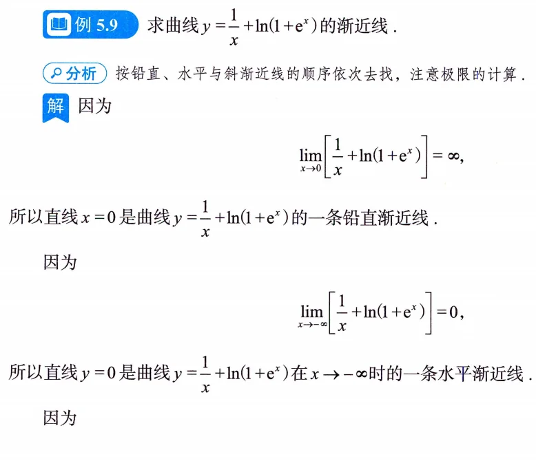
思路 按"铅直、水平、斜"的顺序走流程，\(x\to+\infty\) 与 \(x\to-\infty\) 分开算。 要点 曲线 \(y=\dfrac1x+\ln(1+e^x)\) 的渐近线共几条：\(\lim\limits_{x\to0}\left[\dfrac1x+\ln(1+e^x)\right]=\infty\)，得铅直渐近线 \(x=0\)；\(\lim\limits_{x\to-\infty}\left[\dfrac1x+\ln(1+e^x)\right]=0\)，得 \(x\to-\infty\) 方向的水平渐近线 \(y=0\)；\(x\to+\infty\) 时 \(\dfrac{f(x)}{x}\to1\)，且 \(b=\lim\limits_{x\to+\infty}\left[\dfrac1x+\ln(1+e^{-x})\right]=0\)（用 \(\ln(1+e^x)-x=\ln(1+e^{-x})\)），得斜渐近线 \(y=x\)。共 3 条，配图5-6。 注 渐近线的求解本质是对极限计算能力的考查（印P201 注），每一问都是一个极限小题；\(e^x\) 型函数务必分正负无穷两个方向讨论。
例5.10 数列最大项：连续化再回头
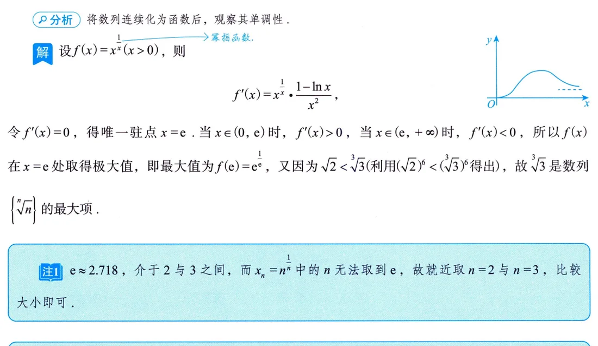
思路 数列离散没法求导，先连续化成 \(f(x)=x^{1/x}\ (x>0)\)，求完最大值再回到整数。 要点 数列 \(\{\sqrt[n]{n}\}\) 的最大项：\(f'(x)=x^{\frac1x}\cdot\dfrac{1-\ln x}{x^2}\)，唯一驻点 \(x=e\)；\((0,e)\) 内 \(f'>0\)、\((e,+\infty)\) 内 \(f'<0\)，故 \(f\) 在 \(x=e\) 取最大值 \(e^{\frac1e}\)。但 \(n\) 是正整数取不到 \(e\)（\(2<e<3\)），就近比较 \(\sqrt2\) 与 \(\sqrt[3]3\)：由 \((\sqrt2)^6=8<9=(\sqrt[3]3)^6\) 知 \(\sqrt2<\sqrt[3]3\)，故最大项是 \(\sqrt[3]3\)。 注 实际问题套路（印P203 注2）：建立目标函数并确定定义域，若实际问题确有最值且目标函数有唯一极值点，则该极值点就是所求最值点。数列问题"连续化"是标准动作，第6讲数列不等式还会反复用。
例5.11 作图：用好对称性 \(y^2=(1-x^2)^3\)
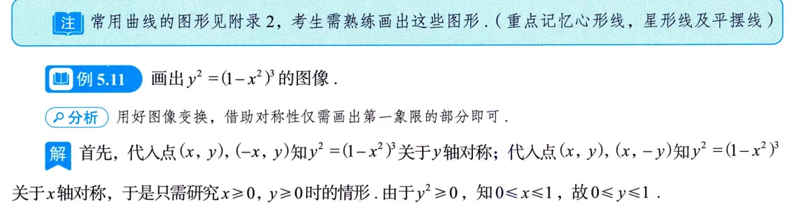
思路 隐函数曲线先看对称性与范围，只需研究第一象限，再镜像翻出去；范围 \(0\le x\le1\) 把区间定死。 要点 画 \(y^2=(1-x^2)^3\) 的图像：代入 \((x,y),(-x,y)\) 知关于 \(y\) 轴对称，代入 \((x,y),(x,-y)\) 知关于 \(x\) 轴对称，只需研究 \(x\ge0, y\ge0\)；由 \(y^2\ge0\) 知 \(0\le x\le1\)，故 \(0\le y\le1\)。此时 \(y=(1-x^2)^{\frac32}\)，\(y'=\dfrac32(1-x^2)^{\frac12}\cdot(-2x)\)，驻点 \(x=0\) 与 \(x=1\)（区间端点）；\(y''=3\cdot\dfrac{2x^2-1}{\sqrt{1-x^2}}\)，令 \(y''=0\) 得 \(x=\dfrac{\sqrt2}{2}\)。列表：在 \(\left(0,\dfrac{\sqrt2}{2}\right)\) 内 \(y'<0\) 且 \(y''<0\)（减且凸），在 \(\left(\dfrac{\sqrt2}{2},1\right)\) 内 \(y'<0\) 且 \(y''>0\)（减且凹）；\(x=0\) 处 \(y'(0)=0\)，\(y=1\) 是最大值，\(\left(\dfrac{\sqrt2}{2},\dfrac{\sqrt2}{4}\right)\)（因 \(y=\left(1-\dfrac12\right)^{3/2}=\dfrac{\sqrt2}{4}\)）是第一象限拐点，\(x=1\) 处 \(y=0\)、切线竖直，是尖点。最后按对称性画出全图（图5-7）。 注 也可借助上表分析出每个分段点分出的区间内函数的单调性与曲线的凹凸性（印P204 注）。隐函数/方程给曲线时，先挖掘对称性、周期性、有界性这些"免费信息"，能省一半计算。
例5.12 作图：幂指函数 \(y=x^x\)
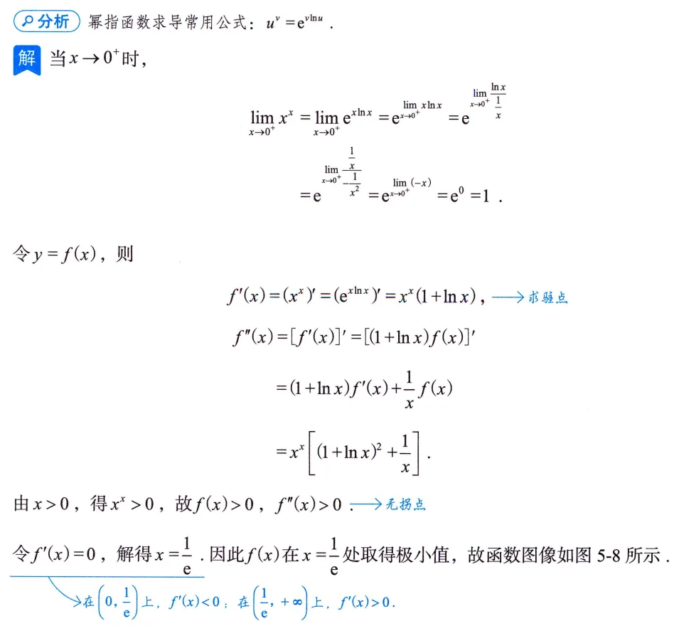
思路 幂指函数求导先化为 \(e^{v\ln u}\)；图像题照四步走，特别要先补 \(x\to0^+\) 的极限定范围。 要点 画 \(y=x^x\ (x>0)\) 的图像：\(y=e^{x\ln x}\)，\(\lim\limits_{x\to0^+}y=\lim\limits_{x\to0^+}e^{x\ln x}=e^0=1\)（补定义后函数右连续，无铅直渐近线）。\(y'=x^x(\ln x+1)\)，令 \(y'=0\) 得 \(x=\dfrac1e\)；\(y''=x^x\left[(\ln x+1)^2+\dfrac1x\right]>0\) 恒成立，曲线在整个 \((0,+\infty)\) 上是凹的。所以 \(x=\dfrac1e\) 取极小值 \(\left(\dfrac1e\right)^{1/e}=e^{-1/e}\)，\(x\to+\infty\) 时 \(y\to+\infty\)，无拐点、无渐近线，按此画图（图5-8）。 注 幂指函数是第2、4讲的老朋友（\(u^v=e^{v\ln u}\)），在作图题里再收割一次；判凹凸时把 \(x^x>0\) 提出去，只看方括号的符号。
例5.13 完整作图：\(y=\dfrac{e^x}{x}\)
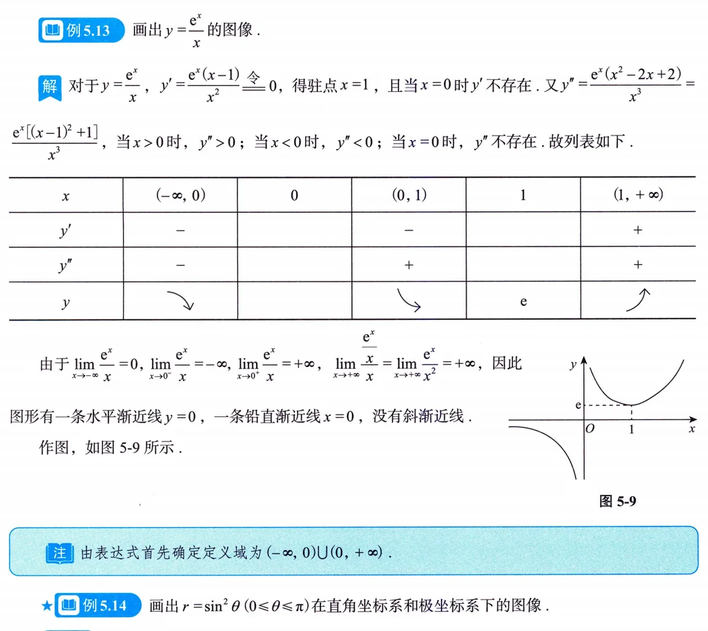
思路 走作图四步：定义域 → 导数工具 → 渐近线 → 作图，列表整理最不容易乱。 要点 画 \(y=\dfrac{e^x}{x}\) 的图像：定义域 \((-\infty,0)\cup(0,+\infty)\)。\(y'=\dfrac{e^x(x-1)}{x^2}\)，驻点 \(x=1\)（\(x=0\) 处 \(y'\) 不存在）；\(y''=\dfrac{e^x(x^2-2x+2)}{x^3}=\dfrac{e^x[(x-1)^2+1]}{x^3}\)，\(x>0\) 时 \(y''>0\)，\(x<0\) 时 \(y''<0\)。列表：\((-\infty,0)\) 凸且减，\((0,1)\) 凹且减，\(x=1\) 取极小值 \(e\)，\((1,+\infty)\) 凹且增。渐近线：\(\lim\limits_{x\to-\infty}\dfrac{e^x}{x}=0\) 得水平渐近线 \(y=0\)；\(x\to0^-\) 为 \(-\infty\)、\(x\to0^+\) 为 \(+\infty\)，得铅直渐近线 \(x=0\)；\(x\to+\infty\) 时 \(\dfrac{y}{x}\to+\infty\)，无斜渐近线。图像见图5-9。 注 \(x=0\) 处函数间断——虽然 \(y''\) 在两侧变号，按"间断点不可能是拐点"，这里不算拐点。这是"渐近线—凹凸—拐点"三块知识在同一道题里的合练。
例5.14 极坐标曲线作图：\(r=\sin^2\theta\)
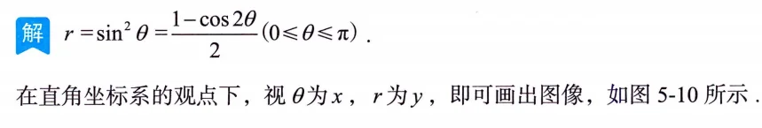
思路 学会用直角坐标系的观点画极坐标的图：把 \(\theta\) 当横轴、\(r\) 当纵轴，先画" \(r\) 关于 \(\theta\) 的函数图像"，再回极坐标描点。 要点 画 \(r=\sin^2\theta\ (0\le\theta\le\pi)\) 在直角坐标系和极坐标系下的图像：降幂公式 \(r=\sin^2\theta=\dfrac{1-\cos2\theta}{2}\)，在直角坐标观点下它是 \(\theta\) 的周期函数（周期 \(\pi\)，值域 \([0,1]\)），描点画出图5-10；再以 \(\theta\) 为极角、\(r\) 为极径逐点转换，得极坐标下的卵形线（图5-11），\(\theta=0,\pi\) 时 \(r=0\)（过极点），\(\theta=\dfrac\pi2\) 时 \(r=1\)（最高点）。 注 极坐标曲线的"看变化趋势"（手写批注）就是盯住 \(r\) 随 \(\theta\) 的增减——\(r\) 增时点往外走、\(r\) 减时往里走。这类题数一考生重点掌握，与后续三重积分/曲线积分的极坐标定限一脉相承。
例5.15 曲率：星形线上的填空
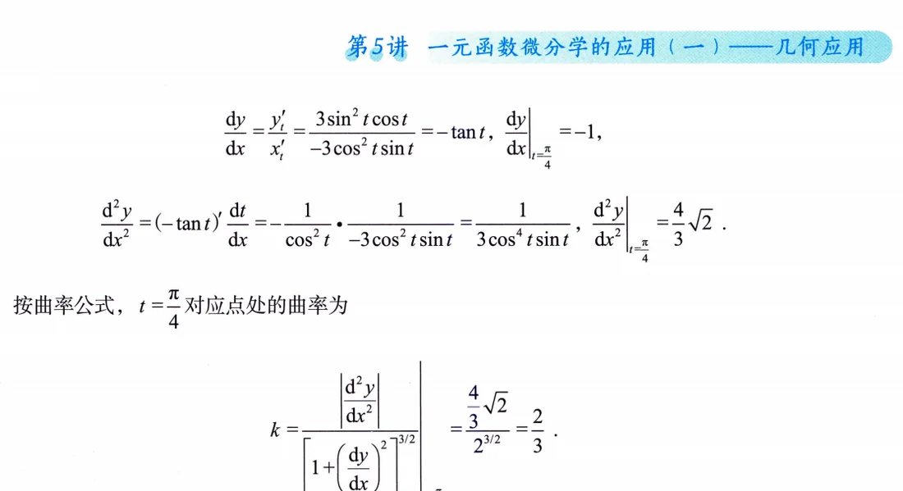
思路 主要考查参数方程求导：先算 \(\dfrac{dy}{dx}\)、\(\dfrac{d^2y}{dx^2}\)，再代曲率公式（仅数一、二）。 要点 曲线 \(\begin{cases}x=\cos^3t\\ y=\sin^3t\end{cases}\)（星形线）在 \(t=\dfrac{\pi}{4}\) 对应点处的曲率：\(\dfrac{dy}{dx}=\dfrac{y_t'}{x_t'}=\dfrac{3\sin^2t\cos t}{-3\cos^2t\sin t}=-\tan t\)，\(\left.\dfrac{dy}{dx}\right|_{t=\frac\pi4}=-1\)；\(\dfrac{d^2y}{dx^2}=\dfrac{\left(\dfrac{dy}{dx}\right)'_t}{x_t'}=\dfrac{-\sec^2t}{-3\cos^2t\sin t}=\dfrac{1}{3\cos^4t\sin t}\)，在 \(t=\dfrac{\pi}{4}\) 处 \(\dfrac{d^2y}{dx^2}=\dfrac{4\sqrt2}{3}\)，代入 \[ k=\frac{\left|\dfrac{d^2y}{dx^2}\right|}{\left[1+\left(\dfrac{dy}{dx}\right)^2\right]^{3/2}}=\frac{2}{3}, \] 应填 \(\dfrac23\)。 注 曲率题基本都是考填空（手写批注），套路固定：参数求导两步走，公式一近代完事；星形线、摆线这些常用曲线的参数方程要背熟（附录2）。
例5.16 实际问题最值：密闭圆柱容器
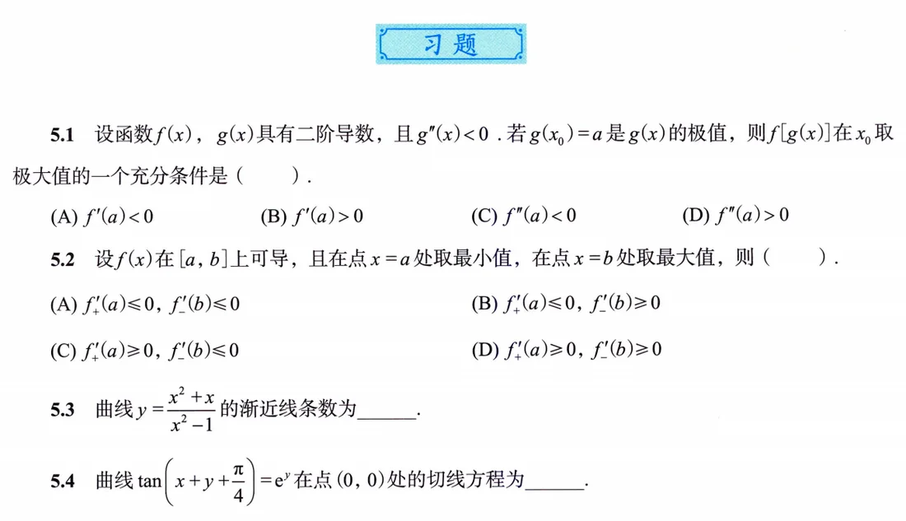
思路 实际问题最值的标准流程（印P203 注2）：设自变量、建立目标函数、定定义域，唯一极值点即最值点。 要点 工厂用钢板造容积为 \(V\) 的密闭圆柱容器，规定高是底面半径的 2 倍，问怎样用料最省：设底半径 \(r\)、高 \(h=2r\)，由 \(V=\pi r^2 h=2\pi r^3\) 可把 \(r=\sqrt[3]{\dfrac{V}{2\pi}}\) 看成常数，目标函数（表面积） \[S(r)=2\pi r^2+2\pi rh=2\pi r^2+\frac{2V}{r}\quad (r>0),\] 令 \(S'(r)=4\pi r-\dfrac{2V}{r^2}=0\) 得 \(2\pi r^3=V\)，即 \(r=\sqrt[3]{\dfrac{V}{2\pi}}\)，\(h=2r\)。由实际问题确有最小值且驻点唯一，此时即最小用料 \(S_{\min}=6\pi r^2=3\sqrt[3]{2\pi}\,V^{2/3}\)。 注 目标函数里的 \(V\) 是已知常数，别当变量；"表面积 = 上下底 \(2\pi r^2\) + 侧面积 \(2\pi rh\)"，代入 \(h=2r\) 后用 \(V\) 消元。这类题是例5.10 注2 的直接应用，数一数三的物理/经济应用题（第7讲）都是这个模板。
易错点与技巧
- \(f'(x_0)=0\) 只是必要条件，别看到驻点就喊极值（\(y=x^3\) 在 0 处）；极值点还要去不可导点里找（\(y=|x|\)，印P189 注1）。判极值的优先级：定义或第一充分条件最稳，\(f''\) 好算时才用第二充分条件。
- 极值是局部概念，最值是整体概念；区间内部的最值点必是极值点，端点处取的最值不是极值点（印P201-202，\(e^x\) 在 \([0,+\infty)\) 的例子：端点无双侧邻域）。
- 间断点可以是极值点（印P188 四类各一例：可去→极大、跳跃→极小、无穷→极小、振荡→极大），但间断点不可能是拐点——拐点处只要求连续（印P193）。
- 写法别混：极值点写 \(x=x_0\)，拐点写 \((x_0, f(x_0))\)（印P193 注3）。
- 判拐点最稳的办法是看 \(y''\) 在两侧是否变号（第一充分条件，最常用，印P194）；\(f'''(x_0)\ne0\) 只是充分条件，它等于零时仍可能有拐点，退回看变号或上第三充分条件。
- 渐近线顺序：铅直（无定义点、端点、分段点）→ 水平 → 斜（印P199 注3）；斜渐近线要求 \(a\ne0\) 且 \(b\) 都求出来且都存在（\(y=x+\sin x\) 是经典反例，印P200 注4①）；同一侧水平与斜不能共存，但 \(x\to+\infty\) 与 \(x\to-\infty\) 两方向各自独立（\(y=\arctan x\) 两条水平）。
- 曲线与渐近线可以有交点（\(y=\dfrac{\sin x}{x}\)，印P200 注4②），别拿"不相交"当渐近线的定义。
- 数拐点/极值点个数别死算导数：先看能不能因式分解套 \(k_1+2k_2+k_3-1\) 与 \(k_1+2k_2+3k_3-2\)（例5.7、例5.8，印P196-198）；实在要算，记住"三重根是 \(f''=0\) 的单根、\(m\) 重因式是导数的 \(m-1\) 重因式"（印P197 手写批注），如例5.8 常规解法里 \(f''\) 必含一次因式 \(x-3\)。
- 隐函数求极值：令 \(y'=0\) 得到的关系（如 \(y=x\)）必须代回原方程解驻点，判别时代 \(y''\) 的数值（例5.3、习题5.9）；求 \(f^{(n)}\) 的极值时，函数值代 \(f^{(n)}\) 本身而不是 \(f\)（例5.4）。
- 两个常用小套路：见 \(f\cdot f'\) 凑 \(\dfrac12 f^2\) 的导数（例5.1）；绝对值、分段函数先拆段再分析（例5.6）。
- 幂指函数\(x^x\)、\(x^{1/x}\) 一律先化 \(e^{v\ln u}\) 再求导（例5.10、例5.12）；数列最值先连续化、回到整数时"就近比较"（\(\sqrt2\) 与 \(\sqrt[3]3\) 比六次方）。
- 选择题里举例（\(e^x\)、\(-x^4\) 等）只能排除选项，不能当证明（印P191 注）。
- （数一、二）曲率公式分母是 \(3/2\) 次幂、分子带绝对值；参数方程别直接对 \(t\) 用公式，必须先化 \(\dfrac{dy}{dx}\)、\(\dfrac{d^2y}{dx^2}\)（例5.15）。
考点与方法补充（站注）
以下条目均为站注（来自公开真题统计与备考经验调研，非原书内容），数学表述以原书为准。
- 站注·真题大数据（考频定位）：本讲对应"导数计算与几何应用（单调/极值/凹凸）"，属第一梯队——新东方《考研高数历年真题大数据》近 15 年统计显示该板块几乎每年必考，第一梯队考点合计约占高数分值 60% 以上；高频题型就是单调性极值凹凸渐近线与函数作图。渐近线是函数性态题里的常客，曲率（数一、二）考得少，考了多是小题。
- 站注·真题大数据（跨讲联动）："方程根的个数讨论"在考频统计里常与第 6 讲中值定理、零点问题捆绑命题，其主力工具正是本讲的单调性判别——先判单调再看端点/极值符号，根的个数就出来了。基础阶段把本讲的"列表定单调"练熟，第 6 讲的零点题只是在其上加一个辅助函数。
- 站注·张宇方法论（原书扉页与公开课精神印证）：张宇反复强调"尽快结束纯听课阶段，自己动手最重要"——本讲判定定理看似简单，但例5.11、例5.13 这类作图题必须亲手列表、亲手画图，眼高手低在函数性态题上最吃亏；扉页手写"画出 \(f(x)\) 大致的图像"正是本讲的总目标（印P186）。
- 站注·备考路线：按基础—强化—冲刺的经典路线（《基础30讲》+《300题》起步），本讲在强化阶段会与不等式证明、方程根个数、中值定理合成大专题；基础阶段验收标准建议取真题检验——随机抽 5 道函数性态大题独立完成且正确率达标，才算过关。
- 站注·作图题流程（对原书四步的应试化复述）：① 定义域+奇偶周期对称性（能省一半计算，见例5.11）→ ② 一阶导定单调极值、二阶导定凹凸拐点，列成一张表 → ③ 三种渐近线按流程图走 → ④ 描点连线。每一步都是独立的采分点，即使不考"画图"，拆开任意一步都是一道选择/填空。
知识清单自测
自测题
本讲自测题多取材于原书习题5.1–5.9（印P208-210）。
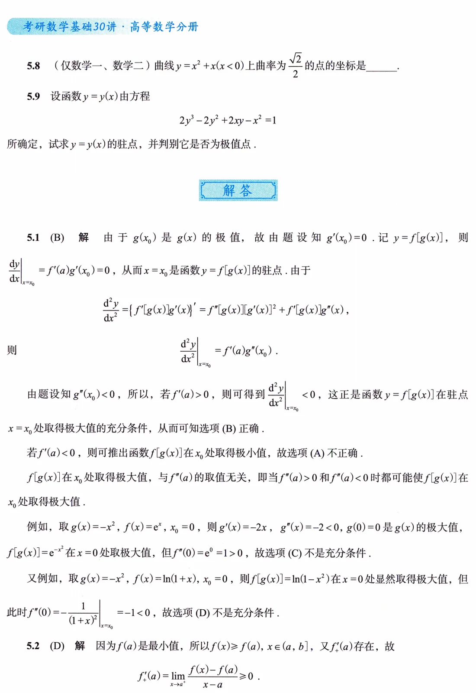
1. 求曲线 \(y=\dfrac{x^2+x}{x^2-1}\) 的渐近线。
查看答案
解 \(x=1\) 处 \(y=\dfrac{x(x+1)}{(x-1)(x+1)}\)，\(\lim\limits_{x\to1}y=\lim\limits_{x\to1}\dfrac{x}{x-1}=\infty\)，得铅直渐近线 \(x=1\)（唯一的铅直渐近线）；\(x=-1\) 处极限存在（\(\dfrac12\)），不是渐近线。\(x\to\infty\) 时 \(y\to1\)，得水平渐近线 \(y=1\)；由 \(y\to1\) 知无斜渐近线。共 2 条。（原书习题 5.3）
2. 求 \(y=x+2\cos x\) 在 \(\left[0,\dfrac{\pi}{2}\right]\) 上的最大值。
查看答案
解 \(y'=1-2\sin x=0\) 得 \(x=\dfrac{\pi}{6}\)；\(y''=-2\cos x\)，\(y''\left(\dfrac{\pi}{6}\right)=-\sqrt3<0\)，为极大值点，且是 \(\left(0,\dfrac{\pi}{2}\right)\) 内唯一极值点。比较 \(y(0)=2\)，\(y\left(\dfrac{\pi}{6}\right)=\sqrt3+\dfrac{\pi}{6}\approx2.26\)，\(y\left(\dfrac{\pi}{2}\right)=\dfrac{\pi}{2}\)，最大值为 \(\sqrt3+\dfrac{\pi}{6}\)。（原书习题 5.6）
3. 求曲线 \(y=(2x-1)e^{\frac1x}\) 的斜渐近线。
查看答案
解 \(a=\lim\limits_{x\to\infty}\dfrac{y}{x}=\lim\limits_{x\to\infty}\left(2-\dfrac1x\right)e^{\frac1x}=2\)；
\[b=\lim_{x\to\infty}(y-ax)=\lim_{x\to\infty}\left[2x\left(e^{\frac1x}-1\right)-e^{\frac1x}\right]=\lim_{x\to\infty}\left[\dfrac{2\left(e^{\frac1x}-1\right)}{\frac1x}-e^{\frac1x}\right]=2-1=1.\]
斜渐近线为 \(y=2x+1\)。（原书习题 5.7）
4. 设 \(y=y(x)\) 由方程 \(2y^3-2y^2+2xy-x^2=1\) 确定，求 \(y(x)\) 的驻点，并判别它是否为极值点。
查看答案
解 方程两边对 \(x\) 求导：\(3y^2y'-2yy'+y+xy'-x=0\)。令 \(y'=0\) 得 \(y=x\)，代回原方程得 \(2x^3-x^2-1=0\)，即 \((x-1)(2x^2+x+1)=0\)，唯一驻点 \(x=1\)（此时 \(y=1\)）。(*)式两边再对 \(x\) 求导：\((3y^2-2y+x)y''+2(3y-1)(y')^2+2y'-1=0\)，代入 \(x=1,\ y=1,\ y'=0\) 得 \(y''\big|_{x=1}=\dfrac12>0\)，故 \(x=1\) 是 \(y=y(x)\) 的极小值点。（原书习题 5.9）
5. 设 \(f(x)=x^3-3x^2-9x+1\)，求 \(f(x)\) 的极值与曲线 \(y=f(x)\) 的拐点。
查看答案
解 \(f'(x)=3x^2-6x-9=3(x-3)(x+1)\)，驻点 \(x=-1,3\)；\(f''(x)=6x-6\)，\(f''(-1)=-12<0\) 故 \(x=-1\) 是极大值点，极大值 \(f(-1)=6\)；\(f''(3)=12>0\) 故 \(x=3\) 是极小值点，极小值 \(f(3)=-26\)。令 \(f''(x)=0\) 得 \(x=1\)，且 \(f''\) 在 \(x=1\) 两侧变号（左负右正），故 \((1, f(1))=(1,-10)\) 是曲线的拐点。（仿例5.3 的标准流程：驻点—二阶判别—拐点检查）
6. （数一、二）求曲线 \(y=x^2+x\ (x<0)\) 上曲率为 \(\dfrac{\sqrt2}{2}\) 的点的坐标。
查看答案
解 \(y'=2x+1\)，\(y''=2\)，曲率 \[k=\frac{|y''|}{[1+(y')^2]^{3/2}}=\frac{2}{[1+(2x+1)^2]^{3/2}}=\frac{\sqrt2}{2},\] 即 \([1+(2x+1)^2]^{3/2}=2\sqrt2=2^{3/2}\)，得 \(1+(2x+1)^2=2\)，\((2x+1)^2=1\)，\(2x+1=\pm1\)，\(x=0\) 或 \(x=-1\)。由 \(x<0\) 舍去 \(x=0\)，取 \(x=-1\)，\(y=(-1)^2+(-1)=0\)，所求点为 \((-1,0)\)。（原书习题 5.8）